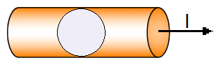
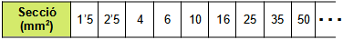
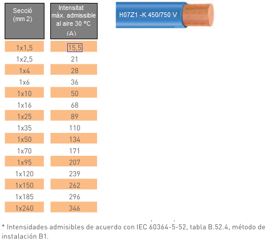
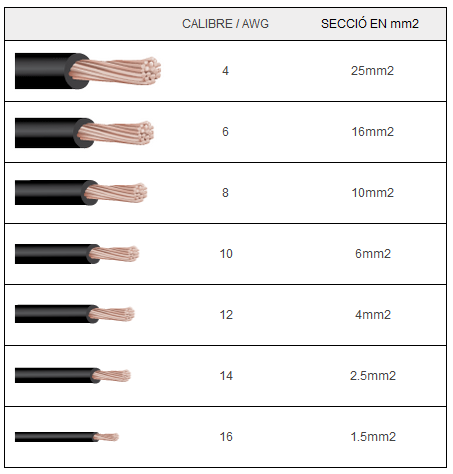

La Secció d'un cable elèctric fa referència al diàmetre que ha de tindre el conductor, normalment de coure, independentment de la capa de revestiment aïllant. Aquest gruix serà el que determine la quantitat de corrent, mesurada en Amperes, que el cable serà capaç de suportar sense provocar un sobre-escalfament.
La Secció o gruix del conductor es mesura en mm2 i els seus valors estan normalitzats. Per a conductors a l'aire són:

En el full de característiques d'un cable elèctric s'especifica per a cada Secció la Intensitat Màxima admissible

Aquesta taula ens confirma el que vam veure en la Unitat de Treball anterior: "la resistència d'un conductor elèctric és inversament proporcional a la seua secció, es a dir, quan més gruixut sigue un conductor menys resistència tindrà o més corrent elèctric podrà soportar"
Gruix dels cables en format AWG (American Wire Gauge)
En molts llocs d'Internet i també en llibres i manuals, especialment d'origen nord-americà, és comú trobar la mesura del gruix del conductor dels cables elèctrics amb la referència AWG. Com més alt és aquest número, es refereix a una menor grossària. La següent taula ens mostra les equivalències entre el format AWG i els mm2:

La Intensitat Màxima Admissible és la màxima quantitat d'amperes que pot suportar un cable sense que es produïsca un deteriorament de l'aïllant per efecte joule.
El conductors a l'aire son tots els conductors que no siguin enterrats o aeris, és a dir, aquells que es col·loquen en instal·lacions sota tub en muntatge superficial o encastat, directament sobre la paret, etc.